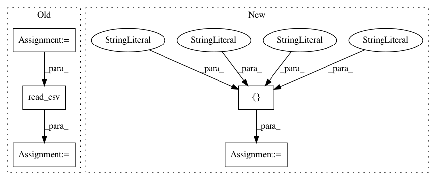

22c8e467fce55e8dd5c2a3b5363ea7fc7ef26bfb,trackpy/tests/test_reproducibility.py,TestReproducibility,setUp,#TestReproducibility#,78
Before Change
os.remove(reproduce_fn)
def setUp(self):
self.expected = pd.read_csv(os.path.join(path, "data",
"reproduce_v0.3.1.csv"))
self.actual = pd.read_csv(reproduce_fn)
self.compared = compore_pos_df(self.actual, self.expected,
pos_atol=0.001, lost_atol=1)
self.characterize_rtol = 0.0001
After Change
self.characterize_params = dict(diameter=self.diameter,
characterize=True)
self.pos_columns = ["y", "x"]
self.char_columns = ["mass", "size", "ecc", "signal", "raw_mass", "ep"]
def test_find_raw(self):
actual = tp.grey_dilation(self.v0_inverted, **self.find_params)
assert_array_equal(actual, self.expected_find_raw)
In pattern: SUPERPATTERN
Frequency: 3
Non-data size: 5
Instances
Project Name: soft-matter/trackpy
Commit Name: 22c8e467fce55e8dd5c2a3b5363ea7fc7ef26bfb
Time: 2018-01-23
Author: caspervdw@gmail.com
File Name: trackpy/tests/test_reproducibility.py
Class Name: TestReproducibility
Method Name: setUp
Project Name: catalyst-cooperative/pudl
Commit Name: fbd16b4f301f09b8868b60a4762700f3251e2cdc
Time: 2019-12-05
Author: zane.selvans@catalyst.coop
File Name: src/pudl/transform/ferc1.py
Class Name:
Method Name: plant_in_service
Project Name: yzhao062/pyod
Commit Name: 63aadbc0190bde1efe3d409d575c8354f648ec37
Time: 2017-10-08
Author: yuezhao@cs.toronto.edu
File Name: pyador/tests/test_pyador.py
Class Name:
Method Name: